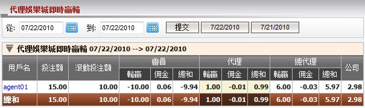
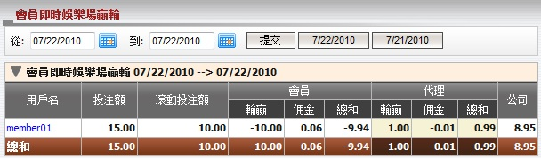
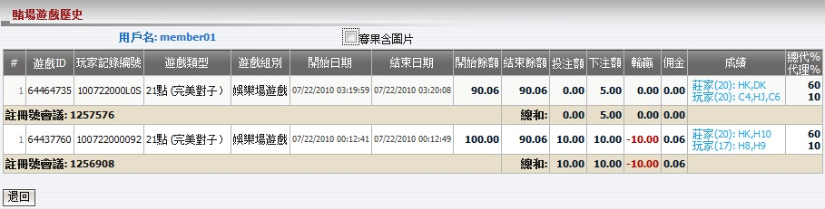
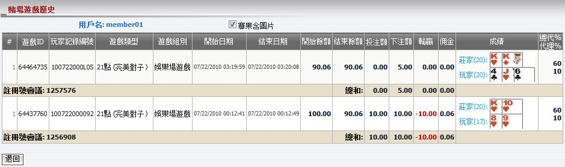

娛樂城即時輸贏
定義:
娛樂城即時輸贏是一份不斷更新總代理關於遊戲結束後的娛樂城輸贏,佣金的報告。

圖: 1.1
用詞註解:
-
投注額: 總投注額於娛樂城遊戲。
- 滾動投注額: 總投注於娛樂城遊戲除了和局遊戲。
- 會員輸贏: 會員輸贏的數額。
- 會員佣金: 會員從代理處得到的佣金數額。
- 會員總和: 會員包括佣金的總輸贏數額。
- 代理輸贏: 代理基於佔成數的輸贏數額。
- 代理佣金: 扣除會員佣金後, 代理上線處收到的佣金數額。
- 代理總和: 代理包括佣金的總輸贏數額。
- 總代理輸贏: 總代理基於佔成數的輸贏數額。
- 總代理佣金: 扣除代理佣金後, 總代理從上線處收到的佣金數額。
- 總代理總和: 總代理包括佣金的總輸贏數額。
- 公司: 總代理需支付予或從上線處接收到的總數額。
點擊代理用戶名以查看從屬特定代理的會員的即時娛樂場輸贏報告 (圖1.2)。

圖: 1.2
用詞註解:
要查看賭場遊戲歷史, 您可點擊會員用戶名 (圖1.3)。

圖: 1.3
用詞註解:
- 遊戲類型: 遊戲種類。
- 遊戲組別: 該遊戲屬於的組別
- 開始餘額: 遊戲結束前的原始餘額。
- 結束餘額: 遊戲結束後的整體餘額。
- 投注额: 投注金額。
- 下注額 = 投注金額 - 和局金額。
- 輸贏: 輸贏數額。
- 佣金: 佣金數額。
- 成績: 遊戲結果。
- 總代％: 總代理佔成數。
- 代理％: 代理佔成數。
- 註冊號 ID: 獨特的數字以識別訪問娛樂城的會員。
如何理解報告:
此報告根據遊戲的ID降序排列 (圖 1.3)。讓我們計算 master1, agent01對於member01的輸贏如圖1.1和圖1.2顯示。 在這份報告, member01兩次訪問娛樂城玩遊戲。
-
註冊號 ID = 1256908: member01 進行21點遊戲, 投注額 = 10, 會員佣金 = 0.6%, 總代理佔成 = 60%, 總代理佣金 = 0.8% , 代理佔成 = 10%, 代理佣金 = 0.6% 和會員輸了此投注。
開始餘額 = 100.
投注額 = 下注額 = 10.
會員輸贏 = -投注額 = -10.
會員佣金 = 佣金 = 投注額 * 會員佣金 = 10 * 0.6% = 0.06.
會員總和 = 會員輸贏 + 會員佣金 = -10 + 0.06 = -9.94.
結束餘額 = 開始餘額 + 會員輸贏 + 會員佣金 = 100 - 10 + 0.06 = 90.06.
代理輸贏 = 投注額 * 代理佔成 = 10 * 10% = 1.
代理佣金 = 投注額 * 代理佣金 * (1 - 代理佔成) - 會員佣金 = 10 * 0.6% * (1 - 10%) - 0.06 = -0.01.
代理總和 = 代理輸贏 + 代理佣金 = 1 - 0.01 = 0.99.
總代理輸贏 = 投注額 * 總代理佔成 = 10 * 60% = 6.
總代理佣金 = 投注額 * 會員佣金 * [1 - (總代理佔成 + 代理佔成)] - 投注額 * 会员佣金 * (1 - 代理佔成) = 10 * 0.8% * [1 - (60% + 10%)] - 10 * 0.6% * (1 - 10%) = -0.03.
總代理總和 = 總代理輸贏 + 總代理佣金 = 6 - 0.03 = 5.97.
-
第二個註冊號: member01 投注 5 於21的遊戲類型, 會員佣金 = 0.6%, 總代理佔成 = 60%, 總代理佣金 = 0.8% , 代理佔成 = 10%, 代理佣金 = 0.6% 和會員此投注和局。
開始餘額 = 結束餘額於一個投注 = 90.06.
投注額 = 0.
會員輸贏 = 0.
會員佣金 = 佣金 = 0.
會員總和 = 0.
結束餘額 = 開始餘額 + 會員輸贏 + 會員佣金 = 90.06 + 0 + 0 = 90.06.
代理輸贏 = 0.
代理佣金 = 0.
代理總和 = 0.
總代理輸贏 = 0.
總代理佣金 = 0.
總代理總和 = 0.
從以上兩個投注, 我們知道最後的結果顯示在圖1.1和圖1.2:
圖 1.2:
- 投注額 = 10 + 5 = 15.
- 滾動投注額 = 10 + 0 = 10.
- 會員輸贏 = -10 + 0 = -10.
- 會員佣金 = 0.06 + 0 = 0.06.
- 會員總和 = -9.94 + 0 = -9.94.
- 代理輸贏 = 1 + 0 = 1.
- 代理佣金 = -0.01 + 0 = -0.01.
- 代理總和 = 0.99 + 0 = 0.99
- 公司 = -(會員總和 + 代理總和) = -(-9.94 + 0.99) = 8.95.
圖 1.1:
- 投注額 = 10 + 5 = 15.
- 滾動投注額 = 10 + 0 = 10.
- 會員輸贏 = -10 + 0 = -10.
- 會員佣金 = 0.06 + 0 = 0.06.
- 會員總和 = -9.94 + 0 = -9.94.
- 代理輸贏 = 1 + 0 = 1
- 代理佣金 = -0.01 + 0 = -0.01.
- 代理總和 = 0.99 + 0 = 0.99.
- 總代理輸贏 = 6 + 0 = 6.
- 總代理佣金 = -0.03 + 0 = -0.03.
- 總代理總和 = 5.97 + 0 = 5.97.
- 總和 = -(會員總和 + 代理總和 + 總代理總和) = -(-9.94 + 0.99 + 5.97) = 2.98.
注:
- 此報告只包含娛樂城輸贏數額。
- 要查看娛樂城遊戲的圖片成績, 勾取 "賽果含圖片" 複選框 (圖1.4)。

圖: 1.4